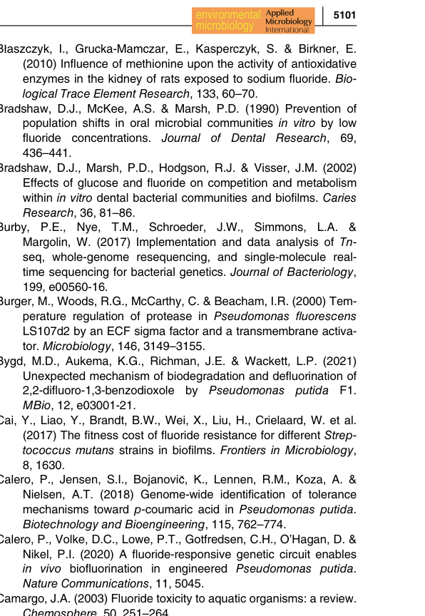

Enolase (2-phospho-D-glycerate hydro-lyase; 2-phosphoglycerate dehydratase; EC 4.2.1.11) is a Mg2+-dependent lyase that catalyzes the reversible dehydration of (2R)-2-phosphoglycerate to phosphoenolpyruvate (PEP) with release of water. This is the penultimate (step 4 of 5) reaction of the lower glycolytic / Embden-Meyerhof-Parnas segment and the corresponding hydration step of gluconeogenesis, supplying PEP for pyruvate generation and as a precursor for anabolic and PTS-dependent processes. In Pseudomonas putida KT2440, whose glucose catabolism runs through a cyclic Entner-Doudoroff / pentose-phosphate / EMP (EDEMP) architecture, enolase provides the conserved lower-EMP step that generates PEP and links upper sugar-phosphate pools to pyruvate and downstream central carbon metabolism. The enzyme is a conserved member of the enolase superfamily (two-domain TIM-barrel C-terminal catalytic domain plus N-terminal capping domain), requires Mg2+ as a catalytic cofactor, and acts as a homo-oligomer in the cytoplasm. In many bacteria enolase is also a component of the RNA degradosome and, in several pathogens, moonlights as a cell-surface plasminogen-binding protein; neither of these accessory roles has been experimentally demonstrated for the P. putida KT2440 protein.
| GO Term | Evidence | Action | Reason |
|---|---|---|---|
|
GO:0000015
phosphopyruvate hydratase complex
|
IEA
GO_REF:0000120 |
ACCEPT |
Summary: Enolase functions as a homo-oligomer; the phosphopyruvate hydratase complex is the multimeric enolase assembly in which catalysis occurs.
Reason: This cellular component is the standard, well-supported assignment for a member of the enolase family. Bacterial enolases form catalytically active oligomers (typically dimers/octamers), and the InterPro-based assignment of the phosphopyruvate hydratase complex is consistent with the conserved family architecture. Correct for the core function of this gene.
|
|
GO:0000287
magnesium ion binding
|
IEA
GO_REF:0000120 |
ACCEPT |
Summary: Enolase is an obligately Mg2+-dependent enzyme; the catalytic site coordinates Mg2+ ions required for the dehydration reaction.
Reason: UniProt/HAMAP annotates Mg2+ as the required cofactor and lists multiple Mg2+-binding residues (positions 246, 289, 316), with a second Mg2+ recruited via substrate during catalysis. Magnesium ion binding is a genuine, core molecular function of enolase.
|
|
GO:0004634
phosphopyruvate hydratase activity
|
IEA
GO_REF:0000120 |
ACCEPT |
Summary: Core catalytic activity of enolase, EC 4.2.1.11, catalyzing the reversible 2-phosphoglycerate to phosphoenolpyruvate + H2O reaction.
Reason: This is the defining molecular function of the gene product, supported by EC 4.2.1.11, RHEA:10164, conserved active-site residues (proton donor 209, proton acceptor 341) and substrate-binding residues, and the HAMAP family assignment. Represents the primary core function.
|
|
GO:0005576
extracellular region
|
IEA
GO_REF:0000044 |
MARK AS OVER ANNOTATED |
Summary: This localization derives from a UniProt subcellular-location keyword ("Secreted") propagated by the HAMAP enolase rule, which captures the moonlighting surface/secreted behavior documented in pathogens, not in P. putida KT2440.
Reason: The HAMAP rule MF_00318 attaches Secreted/Cell surface locations to all family members because enolase moonlights as a surface plasminogen-binding protein in numerous pathogens. There is no experimental evidence that the P. putida KT2440 enolase is secreted or extracellular; the deep-research synthesis explicitly states no organism-specific surface/secretome evidence was found and that the enzyme should be treated as primarily cytosolic. This is an electronic over-propagation of a pathogen-specific accessory role.
|
|
GO:0005737
cytoplasm
|
IEA
GO_REF:0000120 |
ACCEPT |
Summary: Enolase carries out its catalytic role as a cytoplasmic central-carbon metabolism enzyme.
Reason: Cytoplasm is the well-supported primary location for bacterial enolase and is consistent with its role in cytosolic glycolysis/gluconeogenesis. This is the correct localization for the core function in KT2440.
|
|
GO:0006096
glycolytic process
|
IEA
GO_REF:0000120 |
ACCEPT |
Summary: Enolase catalyzes step 4 of 5 in the glycolytic conversion of glyceraldehyde-3-phosphate to pyruvate (2-PG to PEP).
Reason: This is the canonical biological process for enolase, supported by the UniPathway glycolysis assignment (UPA00109; pyruvate from D-glyceraldehyde 3-phosphate, step 4/5) and conserved across the enolase family. Represents a core process for the gene. In KT2440 the same enzyme also operates in gluconeogenesis; a gluconeogenesis term could additionally be proposed, but the glycolytic-process annotation is correct as stated.
|
|
GO:0009986
cell surface
|
IEA
GO_REF:0000120 |
MARK AS OVER ANNOTATED |
Summary: Cell-surface localization is propagated from the HAMAP enolase rule, reflecting moonlighting surface display in pathogens; it is not demonstrated for P. putida KT2440.
Reason: As with the extracellular-region annotation, the cell-surface location stems from UniProt/HAMAP capturing the well-documented surface plasminogen- binding moonlighting role of enolase in pathogenic bacteria (e.g. Streptococcus suis). No surfaceome or moonlighting evidence exists for the non-pathogenic soil bacterium KT2440, and the deep research advises keeping its annotation primarily cytosolic. This is an over-annotation by electronic propagation of a pathogen-specific accessory function.
|
The research report should be a detailed narrative explaining the function, biological processes, and localization of the gene product. Citations should be given for all claims.
You should prioritize authoritative reviews and primary scientific literature when conducting research. You can supplement
this with annotations you find in gene/protein databases, but these can be outdated or inaccurate.
We are specifically interested in the primary function of the gene - for enzymes, what reaction is catalyzed, and what is the substrate specificity? For transporters, what is the substrate? For structural proteins or adapters, what is the broader structural role? For signaling molecules, what is the role in the pathway.
We are interested in where in or outside the cell the gene product carries out its function.
We are also interested in the signaling or biochemical pathways in which the gene functions. We are less interested in broad pleiotropic effects, except where these elucidate the precise role.
Include evidence where possible. We are interested in both experimental evidence as well as inference from structure, evolution, or bioinformatic analysis. Precise studies should be prioritized over high-throughput, where available.
The UniProt target (Q88MF9) is annotated as enolase (EC 4.2.1.11), a member of the enolase family, encoded by gene symbol eno with ordered locus name PP_1612 in Pseudomonas putida KT2440. The organism context is consistent across P. putida KT2440 systems biology studies that explicitly discuss enolase activity and its perturbation in vivo (e.g., under fluoride stress), supporting that the intended target is the canonical central-carbon enolase in this strain rather than a different “eno” gene from another species. (calero2022roleofthe pages 17-19, lorenzo2024pseudomonasputidakt2440 pages 4-7)
Enolase is a glycolysis/gluconeogenesis enzyme that catalyzes the reversible dehydration of 2-phosphoglycerate (2-PG) to phosphoenolpyruvate (PEP) (2-PG ⇄ PEP). This canonical reaction is explicitly stated in recent literature summaries and experimental studies discussing enolase across taxa. (stockbridge2024thelinkbetween pages 5-6, o’kelly2024moonlightingonthe pages 1-2)
Reaction and substrate specificity. The best-supported substrate/product pair for bacterial enolase is 2-PG ⇄ PEP, a highly conserved reaction in carbohydrate metabolism. In P. putida KT2440, depletion of PEP under fluoride stress is interpreted as consistent with impaired throughput of this exact step. (calero2022roleofthe pages 17-19)
A defining concept for functional interpretation in P. putida KT2440 is that glucose catabolism is not a simple linear Embden–Meyerhof–Parnas (EMP) pathway. Instead, KT2440 runs a cyclic architecture merging reactions from Entner–Doudoroff (ED), pentose phosphate pathway (PPP), and parts of EMP—often referred to as the EDEMP cycle—which supports high NADPH regeneration (redox robustness) at the expense of ATP relative to some organisms. (lorenzo2024pseudomonasputidakt2440 pages 2-4, nikel2014biotechnologicaldomesticationof pages 5-6)
Within this network, the enolase step is part of the lower-glycolytic conversion sequence required to generate PEP (and thereby couple carbohydrate breakdown to pyruvate/acetyl-CoA supply and anabolic precursor routing). This positions eno (PP_1612) as a core node influencing PEP availability and downstream flux distribution in a chassis optimized for stress endurance and redox supply. (lorenzo2024pseudomonasputidakt2440 pages 4-7, lorenzo2024pseudomonasputidakt2440 pages 2-4)
“Moonlighting” refers to a single protein carrying out multiple distinct functions that are not due to gene fusion, splice variants, or simple catalytic promiscuity alone; the concept is closely related to “gene sharing,” where a gene acquires a second function without losing the original function. (gupta2023moonlightingenzymeswhen pages 2-3)
A recurring caution in functional annotation is that moonlighting functions are often context- and organism-dependent. While enolase is a well-known moonlighter in many pathogens (e.g., surface exposure and host-protein binding), such roles should not be assumed for P. putida KT2440 without direct evidence. (satala2023therecruitmentand pages 7-8, gupta2023moonlightingenzymeswhen pages 14-15)
In KT2440, eno/PP_1612 encodes the canonical enolase required for central carbon metabolism, supplying PEP from 2-PG in glycolysis/gluconeogenesis. (calero2022roleofthe pages 17-19, lorenzo2024pseudomonasputidakt2440 pages 2-4)
No direct KT2440-specific localization experiment for PP_1612 enolase was retrieved in the accessible evidence set. Given the enzyme’s canonical role and the nature of the studies citing its activity, the best-supported annotation for KT2440 is that enolase functions primarily as a cytosolic metabolic enzyme. (calero2022roleofthe pages 17-19, lorenzo2024pseudomonasputidakt2440 pages 2-4)
No KT2440-specific essentiality measurement for PP_1612/eno was retrieved in the evidence set, so essentiality should be treated as unresolved here. (tokic2020largescalekineticmetabolic pages 1-2)
A major recent theme relevant to functional annotation is that fluoride (F−) is a potent metabolic inhibitor that targets key enzymes, including enolase.
A 2024 Nature Communications perspective explicitly highlights enolase (EC 4.2.1.11) as a fluoride-sensitive enzyme; it states that enolase catalyzes 2-PG → PEP and reports an inhibition constant Ki ≈ 80 μM for fluoride inhibition of enolase. (stockbridge2024thelinkbetween pages 5-6, stockbridge2024thelinkbetween pages 6-7)
A KT2440-focused systems biology study of NaF stress reported a metabolomics signature consistent with impaired lower glycolysis at/near enolase: PEP depleted over time, while multiple upstream sugar-phosphate intermediates accumulated (e.g., G6P, S7P, F6P, R5P), and downstream metabolic perturbations extended to TCA intermediates (e.g., citrate depletion). These patterns were interpreted by the authors as consistent with fluoride’s inhibitory effect on glycolytic enzymes and specifically with enolase inhibition, referencing prior in vitro identification of enolase as a NaF target. (calero2022roleofthe pages 17-19)
Visual evidence from this study (Figure 5) shows the central metabolism map and time-resolved metabolite fold-changes under fluoride exposure, supporting the qualitative claims about PEP depletion and upstream metabolite accumulation.
Recent (2023–2024) literature continues to strengthen the concept that enolase can act as a moonlighting protein in pathogenic contexts:
These findings inform annotation discipline: they support that enolase can moonlight, but they do not demonstrate that PP_1612 enolase moonlights in non-pathogenic soil bacterium KT2440.
A 2024 minireview describes P. putida KT2440 as having consolidated into a synthetic biology platform for industrial and environmental uses, emphasizing robustness, pollutant catabolism history, and suitability for engineering demanding redox chemistries. (Published 8 Jul 2024; URL: https://doi.org/10.1128/jb.00136-24) (lorenzo2024pseudomonasputidakt2440 pages 1-2)
Because enolase lies in the lower-glycolytic conversion to PEP, it affects precursor supply and carbon partitioning—traits that matter for the many industrial processes that depend on central metabolism performance and redox balance in KT2440. (lorenzo2024pseudomonasputidakt2440 pages 4-7, lorenzo2024pseudomonasputidakt2440 pages 2-4)
A 2023 metabolic engineering study implemented a phosphoketolase shunt in KT2440 to reduce carbon loss via pyruvate decarboxylation and improve growth and product yields. Reported quantitative outcomes include:
(Published Jan 2023; URL: https://doi.org/10.1186/s12934-022-02015-9) (bruinsma2023increasingcellularfitness pages 1-2)
While this work does not target enolase directly, it demonstrates how manipulating central carbon flow upstream/downstream of PEP/pyruvate nodes can materially change fitness and productivity—highlighting why accurate functional annotation of core enzymes like enolase is important when interpreting or designing engineering strategies.
KT2440’s metabolic architecture is described as favoring generation of NAD(P)H (reducing power for stress endurance) over maximal ATP production, which is presented as a key reason pseudomonads—and KT2440 in particular—are well-suited to harsh industrial and environmental conditions. (lorenzo2024pseudomonasputidakt2440 pages 1-2, lorenzo2024pseudomonasputidakt2440 pages 2-4)
This contextualizes enolase’s role: PEP supply and lower glycolysis function must integrate with ED/PPP-driven redox strategies, making enolase an important “interface” between upper sugar-phosphate cycling and downstream precursor generation.
Recent synthesis argues fluoride “powerfully inhibits metabolism,” highlighting enolase as a key vulnerable enzyme with low Ki (μM range), implying that organisms (including KT2440) require export/detox mechanisms and metabolic rewiring to remain functional under fluoride exposure. (Published May 2024; URL: https://doi.org/10.1038/s41467-024-49018-1) (stockbridge2024thelinkbetween pages 5-6, stockbridge2024thelinkbetween pages 6-7)
The table below consolidates the strongest claims about KT2440 enolase (PP_1612) and clearly separates KT2440-supported evidence from general (non-KT2440) moonlighting literature.
| Annotation element | Current best-supported statement for Pseudomonas putida KT2440 enolase (Q88MF9; eno; PP_1612) | Key evidence/citations |
|---|---|---|
| Target identity | The target matches the canonical bacterial enolase annotated in UniProt as EC 4.2.1.11 and encoded in the KT2440 genome context as eno / PP_1612; available KT2440 literature discusses enolase as a central-carbon enzyme in this organism, consistent with the UniProt family/domain assignment. | (tokic2020largescalekineticmetabolic pages 1-2, calero2022roleofthe pages 17-19) |
| Enzyme name / EC | Enolase (2-phospho-D-glycerate hydro-lyase; 2-phosphoglycerate dehydratase), EC 4.2.1.11. | (calero2022roleofthe pages 17-19, stockbridge2024thelinkbetween pages 5-6) |
| Reaction | Enolase catalyzes the reversible conversion of 2-phosphoglycerate (2-PG) to phosphoenolpyruvate (PEP); this is the standard penultimate glycolytic step. | (stockbridge2024thelinkbetween pages 5-6, stockbridge2024thelinkbetween pages 6-7) |
| Substrates / products | Best-supported substrate/product pair is 2-phosphoglycerate ⇄ phosphoenolpyruvate; PEP depletion under fluoride stress in KT2440 is consistent with impaired flux through this reaction. | (calero2022roleofthe pages 17-19, stockbridge2024thelinkbetween pages 5-6) |
| Cofactor dependence | Enolase activity is metal-dependent; fluoride toxicity is discussed as likely involving sequestration/interference with Mg2+/Mn2+-dependent catalytic function, consistent with known enolase chemistry. | (calero2022roleofthe pages 17-19, calero2022roleofthe pages 2-4) |
| Pathway role | In KT2440, enolase functions in central carbon metabolism downstream of upper glycolytic sugar-phosphate pools and upstream of pyruvate-generating steps; this fits the organism’s glucose-processing architecture centered on the ED/EDEMP network while retaining the EMP enolase step to generate PEP. | (tokic2020largescalekineticmetabolic pages 1-2, calero2022roleofthe pages 17-19) |
| Organism-specific metabolic context | KT2440 is a stress-tolerant metabolic chassis whose core metabolism is organized to favor redox generation and flexible carbon processing; enolase sits within this highly engineered/engineerable central metabolic backbone. | (lorenzo2024pseudomonasputidakt2440 pages 1-2, tokic2020largescalekineticmetabolic pages 1-2) |
| Cellular localization | No direct KT2440 localization evidence was retrieved here; the best-supported annotation is therefore cytosolic central-metabolism enzyme, with no organism-specific evidence in this evidence set for surface exposure in P. putida KT2440. | (calero2022roleofthe pages 17-19, stockbridge2024thelinkbetween pages 5-6) |
| Essentiality | No direct experimental essentiality evidence for PP_1612/eno in KT2440 was retrieved in the available context; enolase should therefore be described as likely important for glycolytic flux, but essentiality unresolved in this evidence set. | (tokic2020largescalekineticmetabolic pages 1-2, calero2022roleofthe pages 17-19) |
| Regulation / stress link: fluoride inhibition | Fluoride is a strong mechanistic link for KT2440 enolase annotation: authoritative recent synthesis cites Ki ~80 µM for fluoride inhibition of enolase and KT2440 metabolomics showing upper-glycolysis metabolite accumulation with depletion of PEP and downstream/TCA intermediates, consistent with enolase inhibition. | (stockbridge2024thelinkbetween pages 5-6, stockbridge2024thelinkbetween pages 6-7) |
| Organism-specific fluoride phenotype | In KT2440, NaF triggers broad stress and central-metabolism remodeling; metabolomics reported PEP depletion over time with accumulation of upstream sugar phosphates (e.g., G6P, S7P, F6P, R5P), supporting impaired lower glycolytic throughput at or near enolase. | (calero2022roleofthe pages 17-19, calero2022roleofthe media a1bc74cd) |
| Omics/proteomics evidence | Enolase was detected in KT2440 proteomic work under carbon/phosphorus limitation during mcl-PHA studies, supporting expression of the enzyme under relevant industrial/physiological conditions even though that study was not a dedicated functional dissection of eno. | (mozejkociesielska2019proteomicresponseof pages 10-12) |
| Moonlighting evidence | Enolase has broad bacterial moonlighting literature (especially surface plasminogen binding in pathogens), but no direct evidence was retrieved for moonlighting of KT2440 enolase; such functions should not be transferred to this strain without organism-specific data. | (stockbridge2024thelinkbetween pages 5-6, stockbridge2024thelinkbetween pages 6-7) |
| Applications / real-world relevance | Because KT2440 is a major synthetic biology and metabolic-engineering chassis, enolase matters as a core node in carbon partitioning, stress physiology, and productivity phenotypes relevant to bioproduction, lignin valorization, and central-metabolism rewiring. | (lorenzo2024pseudomonasputidakt2440 pages 1-2, tokic2020largescalekineticmetabolic pages 1-2) |
| PHA / industrial biotechnology relevance | KT2440 is widely used for mcl-PHA production and other biotechnological processes; enolase is relevant indirectly as part of the glycolytic/central-carbon supply network that supports growth, redox balance, and polymer/product formation in this chassis. | (mozejkociesielska2019proteomicresponseof pages 10-12, lorenzo2024pseudomonasputidakt2440 pages 1-2) |
Table: This table condenses the strongest organism-relevant functional annotation points for Pseudomonas putida KT2440 enolase (Q88MF9/PP_1612). It highlights verified enzyme identity, reaction chemistry, pathway context, fluoride inhibition evidence, and why the enzyme matters in KT2440 biotechnology.
Calero et al. (Environmental Microbiology, Jul 2022; URL: https://doi.org/10.1111/1462-2920.16110) provide a metabolic map and time-resolved metabolomics (Figure 5) supporting the claim that fluoride stress in KT2440 depletes PEP and perturbs central carbon metabolism consistent with enolase inhibition. (calero2022roleofthe media a1bc74cd, calero2022roleofthe media 0e6db5ce, calero2022roleofthe media bb6937b4)
References
(calero2022roleofthe pages 17-19): Patricia Calero, Nicolás Gurdo, and Pablo I. Nikel. Role of the
(lorenzo2024pseudomonasputidakt2440 pages 4-7): Victor de Lorenzo, Danilo Pérez-Pantoja, and Pablo I. Nikel. pseudomonas putida kt2440: the long journey of a soil-dweller to become a synthetic biology chassis. Journal of Bacteriology, Jul 2024. URL: https://doi.org/10.1128/jb.00136-24, doi:10.1128/jb.00136-24. This article has 78 citations and is from a peer-reviewed journal.
(stockbridge2024thelinkbetween pages 5-6): Randy B. Stockbridge and Lawrence P. Wackett. The link between ancient microbial fluoride resistance mechanisms and bioengineering organofluorine degradation or synthesis. Nature Communications, May 2024. URL: https://doi.org/10.1038/s41467-024-49018-1, doi:10.1038/s41467-024-49018-1. This article has 68 citations and is from a highest quality peer-reviewed journal.
(o’kelly2024moonlightingonthe pages 1-2): Eve O’Kelly, Krystyna Cwiklinski, Carolina De Marco Verissimo, Nichola Eliza Davies Calvani, Jesús López Corrales, Heather Jewhurst, Andrew Flaus, Richard Lalor, Judit Serrat, John P. Dalton, and Javier González-Miguel. Moonlighting on the fasciola hepatica tegument: enolase, a glycolytic enzyme, interacts with the extracellular matrix and fibrinolytic system of the host. PLOS Neglected Tropical Diseases, 18:e0012069, Aug 2024. URL: https://doi.org/10.1371/journal.pntd.0012069, doi:10.1371/journal.pntd.0012069. This article has 10 citations and is from a domain leading peer-reviewed journal.
(lorenzo2024pseudomonasputidakt2440 pages 2-4): Victor de Lorenzo, Danilo Pérez-Pantoja, and Pablo I. Nikel. pseudomonas putida kt2440: the long journey of a soil-dweller to become a synthetic biology chassis. Journal of Bacteriology, Jul 2024. URL: https://doi.org/10.1128/jb.00136-24, doi:10.1128/jb.00136-24. This article has 78 citations and is from a peer-reviewed journal.
(nikel2014biotechnologicaldomesticationof pages 5-6): Pablo I. Nikel, Esteban Martínez-García, and Víctor de Lorenzo. Biotechnological domestication of pseudomonads using synthetic biology. Nature Reviews Microbiology, 12:368-379, Apr 2014. URL: https://doi.org/10.1038/nrmicro3253, doi:10.1038/nrmicro3253. This article has 466 citations and is from a highest quality peer-reviewed journal.
(gupta2023moonlightingenzymeswhen pages 2-3): Munishwar Nath Gupta and Vladimir N. Uversky. Moonlighting enzymes: when cellular context defines specificity. Cellular and Molecular Life Sciences, 80:1-23, Apr 2023. URL: https://doi.org/10.1007/s00018-023-04781-0, doi:10.1007/s00018-023-04781-0. This article has 67 citations and is from a domain leading peer-reviewed journal.
(satala2023therecruitmentand pages 7-8): Dorota Satala, Aneta Bednarek, Andrzej Kozik, Maria Rapala-Kozik, and Justyna Karkowska-Kuleta. The recruitment and activation of plasminogen by bacteria—the involvement in chronic infection development. International Journal of Molecular Sciences, 24:10436, Jun 2023. URL: https://doi.org/10.3390/ijms241310436, doi:10.3390/ijms241310436. This article has 17 citations.
(gupta2023moonlightingenzymeswhen pages 14-15): Munishwar Nath Gupta and Vladimir N. Uversky. Moonlighting enzymes: when cellular context defines specificity. Cellular and Molecular Life Sciences, 80:1-23, Apr 2023. URL: https://doi.org/10.1007/s00018-023-04781-0, doi:10.1007/s00018-023-04781-0. This article has 67 citations and is from a domain leading peer-reviewed journal.
(tokic2020largescalekineticmetabolic pages 1-2): Milenko Tokic, Vassily Hatzimanikatis, and Ljubisa Miskovic. Large-scale kinetic metabolic models of pseudomonas putida kt2440 for consistent design of metabolic engineering strategies. Biotechnology for Biofuels, Feb 2020. URL: https://doi.org/10.1186/s13068-020-1665-7, doi:10.1186/s13068-020-1665-7. This article has 57 citations.
(stockbridge2024thelinkbetween pages 6-7): Randy B. Stockbridge and Lawrence P. Wackett. The link between ancient microbial fluoride resistance mechanisms and bioengineering organofluorine degradation or synthesis. Nature Communications, May 2024. URL: https://doi.org/10.1038/s41467-024-49018-1, doi:10.1038/s41467-024-49018-1. This article has 68 citations and is from a highest quality peer-reviewed journal.
(zhao2024identificationofplasminogenbinding pages 1-2): Tiantong Zhao, Alex Gussak, Bart van der Hee, Sylvia Brugman, Peter van Baarlen, and Jerry M. Wells. Identification of plasminogen-binding sites in streptococcus suis enolase that contribute to bacterial translocation across the blood-brain barrier. Frontiers in Cellular and Infection Microbiology, Feb 2024. URL: https://doi.org/10.3389/fcimb.2024.1356628, doi:10.3389/fcimb.2024.1356628. This article has 10 citations.
(lorenzo2024pseudomonasputidakt2440 pages 1-2): Victor de Lorenzo, Danilo Pérez-Pantoja, and Pablo I. Nikel. pseudomonas putida kt2440: the long journey of a soil-dweller to become a synthetic biology chassis. Journal of Bacteriology, Jul 2024. URL: https://doi.org/10.1128/jb.00136-24, doi:10.1128/jb.00136-24. This article has 78 citations and is from a peer-reviewed journal.
(bruinsma2023increasingcellularfitness pages 1-2): Lyon Bruinsma, Maria Martin-Pascual, Kesi Kurnia, Marieken Tack, Simon Hendriks, Richard van Kranenburg, and Vitor A. P. Martins dos Santos. Increasing cellular fitness and product yields in pseudomonas putida through an engineered phosphoketolase shunt. Microbial Cell Factories, Jan 2023. URL: https://doi.org/10.1186/s12934-022-02015-9, doi:10.1186/s12934-022-02015-9. This article has 15 citations and is from a peer-reviewed journal.
(calero2022roleofthe pages 2-4): Patricia Calero, Nicolás Gurdo, and Pablo I. Nikel. Role of the
(calero2022roleofthe media a1bc74cd): Patricia Calero, Nicolás Gurdo, and Pablo I. Nikel. Role of the
(mozejkociesielska2019proteomicresponseof pages 10-12): Justyna Możejko-Ciesielska and Luísa S. Serafim. Proteomic response of pseudomonas putida kt2440 to dual carbon-phosphorus limitation during mcl-phas synthesis. Biomolecules, 9:796, Nov 2019. URL: https://doi.org/10.3390/biom9120796, doi:10.3390/biom9120796. This article has 20 citations.
(calero2022roleofthe media 0e6db5ce): Patricia Calero, Nicolás Gurdo, and Pablo I. Nikel. Role of the
(calero2022roleofthe media bb6937b4): Patricia Calero, Nicolás Gurdo, and Pablo I. Nikel. Role of the
(stockbridge2024thelinkbetween pages 10-11): Randy B. Stockbridge and Lawrence P. Wackett. The link between ancient microbial fluoride resistance mechanisms and bioengineering organofluorine degradation or synthesis. Nature Communications, May 2024. URL: https://doi.org/10.1038/s41467-024-49018-1, doi:10.1038/s41467-024-49018-1. This article has 68 citations and is from a highest quality peer-reviewed journal.

id: Q88MF9
gene_symbol: eno
product_type: PROTEIN
status: DRAFT
taxon:
id: NCBITaxon:160488
label: Pseudomonas putida (strain ATCC 47054 / DSM 6125 / CFBP 8728 / NCIMB 11950 / KT2440)
description: Enolase (2-phospho-D-glycerate hydro-lyase; 2-phosphoglycerate dehydratase; EC 4.2.1.11) is a Mg2+-dependent lyase that catalyzes the reversible dehydration of (2R)-2-phosphoglycerate to phosphoenolpyruvate (PEP) with release of water. This is the penultimate (step 4 of 5) reaction of the lower glycolytic / Embden-Meyerhof-Parnas segment and the corresponding hydration step of gluconeogenesis, supplying PEP for pyruvate generation and as a precursor for anabolic and PTS-dependent processes. In Pseudomonas putida KT2440, whose glucose catabolism runs through a cyclic Entner-Doudoroff / pentose-phosphate / EMP (EDEMP) architecture, enolase provides the conserved lower-EMP step that generates PEP and links upper sugar-phosphate pools to pyruvate and downstream central carbon metabolism. The enzyme is a conserved member of the enolase superfamily (two-domain TIM-barrel C-terminal catalytic domain plus N-terminal capping domain), requires Mg2+ as a catalytic cofactor, and acts as a homo-oligomer in the cytoplasm. In many bacteria enolase is also a component of the RNA degradosome and, in several pathogens, moonlights as a cell-surface plasminogen-binding protein; neither of these accessory roles has been experimentally demonstrated for the P. putida KT2440 protein.
existing_annotations:
- term:
id: GO:0000015
label: phosphopyruvate hydratase complex
evidence_type: IEA
original_reference_id: GO_REF:0000120
qualifier: part_of
review:
summary: Enolase functions as a homo-oligomer; the phosphopyruvate hydratase complex is the multimeric enolase assembly in which catalysis occurs.
action: ACCEPT
reason: This cellular component is the standard, well-supported assignment for a member of the enolase family. Bacterial enolases form catalytically active oligomers (typically dimers/octamers), and the InterPro-based assignment of the phosphopyruvate hydratase complex is consistent with the conserved family architecture. Correct for the core function of this gene.
- term:
id: GO:0000287
label: magnesium ion binding
evidence_type: IEA
original_reference_id: GO_REF:0000120
qualifier: enables
review:
summary: Enolase is an obligately Mg2+-dependent enzyme; the catalytic site coordinates Mg2+ ions required for the dehydration reaction.
action: ACCEPT
reason: UniProt/HAMAP annotates Mg2+ as the required cofactor and lists multiple Mg2+-binding residues (positions 246, 289, 316), with a second Mg2+ recruited via substrate during catalysis. Magnesium ion binding is a genuine, core molecular function of enolase.
- term:
id: GO:0004634
label: phosphopyruvate hydratase activity
evidence_type: IEA
original_reference_id: GO_REF:0000120
qualifier: enables
review:
summary: Core catalytic activity of enolase, EC 4.2.1.11, catalyzing the reversible 2-phosphoglycerate to phosphoenolpyruvate + H2O reaction.
action: ACCEPT
reason: This is the defining molecular function of the gene product, supported by EC 4.2.1.11, RHEA:10164, conserved active-site residues (proton donor 209, proton acceptor 341) and substrate-binding residues, and the HAMAP family assignment. Represents the primary core function.
- term:
id: GO:0005576
label: extracellular region
evidence_type: IEA
original_reference_id: GO_REF:0000044
qualifier: located_in
review:
summary: This localization derives from a UniProt subcellular-location keyword ("Secreted") propagated by the HAMAP enolase rule, which captures the moonlighting surface/secreted behavior documented in pathogens, not in P. putida KT2440.
action: MARK_AS_OVER_ANNOTATED
reason: The HAMAP rule MF_00318 attaches Secreted/Cell surface locations to all family members because enolase moonlights as a surface plasminogen-binding protein in numerous pathogens. There is no experimental evidence that the P. putida KT2440 enolase is secreted or extracellular; the deep-research synthesis explicitly states no organism-specific surface/secretome evidence was found and that the enzyme should be treated as primarily cytosolic. This is an electronic over-propagation of a pathogen-specific accessory role.
- term:
id: GO:0005737
label: cytoplasm
evidence_type: IEA
original_reference_id: GO_REF:0000120
qualifier: located_in
review:
summary: Enolase carries out its catalytic role as a cytoplasmic central-carbon metabolism enzyme.
action: ACCEPT
reason: Cytoplasm is the well-supported primary location for bacterial enolase and is consistent with its role in cytosolic glycolysis/gluconeogenesis. This is the correct localization for the core function in KT2440.
- term:
id: GO:0006096
label: glycolytic process
evidence_type: IEA
original_reference_id: GO_REF:0000120
qualifier: involved_in
review:
summary: Enolase catalyzes step 4 of 5 in the glycolytic conversion of glyceraldehyde-3-phosphate to pyruvate (2-PG to PEP).
action: ACCEPT
reason: This is the canonical biological process for enolase, supported by the UniPathway glycolysis assignment (UPA00109; pyruvate from D-glyceraldehyde 3-phosphate, step 4/5) and conserved across the enolase family. Represents a core process for the gene. In KT2440 the same enzyme also operates in gluconeogenesis; a gluconeogenesis term could additionally be proposed, but the glycolytic-process annotation is correct as stated.
- term:
id: GO:0009986
label: cell surface
evidence_type: IEA
original_reference_id: GO_REF:0000120
qualifier: located_in
review:
summary: Cell-surface localization is propagated from the HAMAP enolase rule, reflecting moonlighting surface display in pathogens; it is not demonstrated for P. putida KT2440.
action: MARK_AS_OVER_ANNOTATED
reason: As with the extracellular-region annotation, the cell-surface location stems from UniProt/HAMAP capturing the well-documented surface plasminogen- binding moonlighting role of enolase in pathogenic bacteria (e.g. Streptococcus suis). No surfaceome or moonlighting evidence exists for the non-pathogenic soil bacterium KT2440, and the deep research advises keeping its annotation primarily cytosolic. This is an over-annotation by electronic propagation of a pathogen-specific accessory function.
core_functions:
- description: Catalyzes the reversible dehydration of (2R)-2-phosphoglycerate to phosphoenolpyruvate in lower glycolysis (and the reverse hydration in gluconeogenesis), the Mg2+-dependent penultimate EMP step that supplies PEP for central carbon metabolism in P. putida KT2440.
supported_by:
- reference_id: GO_REF:0000120
supporting_text: Enolase (EC 4.2.1.11) enables phosphopyruvate hydratase activity and is involved in the glycolytic process; UniPathway UPA00109 places it at step 4/5 of pyruvate formation.
molecular_function:
id: GO:0004634
label: phosphopyruvate hydratase activity
directly_involved_in:
- id: GO:0006096
label: glycolytic process
locations:
- id: GO:0005737
label: cytoplasm
references:
- id: GO_REF:0000044
title: Gene Ontology annotation based on UniProtKB/Swiss-Prot Subcellular Location vocabulary mapping, accompanied by conservative changes to GO terms applied by UniProt
findings: []
- id: GO_REF:0000120
title: Combined Automated Annotation using Multiple IEA Methods
findings: []
- id: PMID:12534463
title: Complete genome sequence and comparative analysis of the metabolically versatile Pseudomonas putida KT2440.
findings: []
reference_review:
relevance: MEDIUM
correctness: VERIFIED
review_notes: Genome sequencing paper that established the KT2440 reference genome and the eno/PP_1612 locus; provides the genomic context for the annotation but does not directly characterize enolase function.
{kind=link}